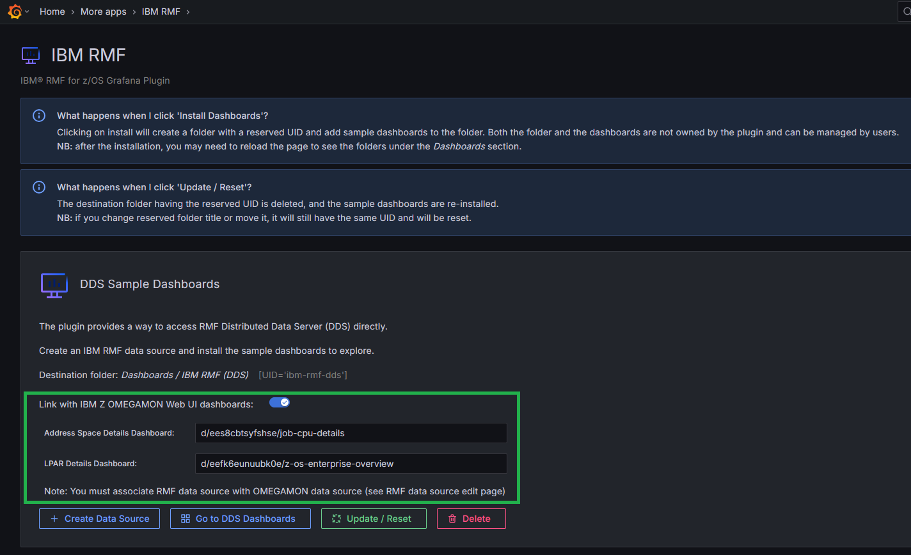
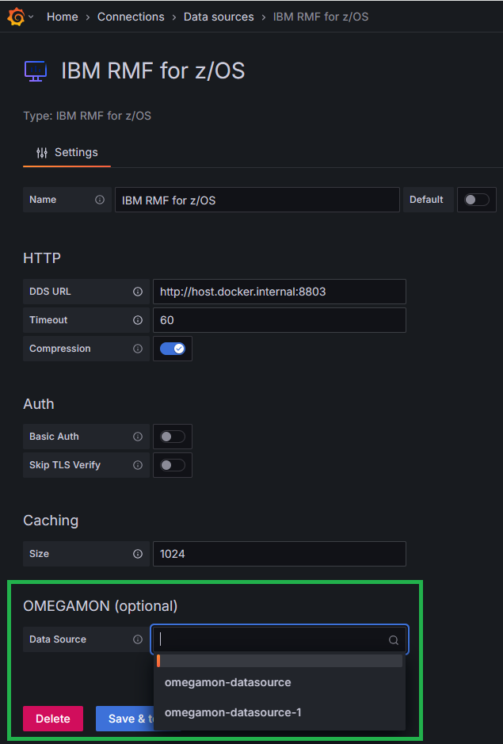

Integrating DDS Dashboards with IBM Z OMEGAMON Dashboards
To enhance visibility and provide deeper insights, the DDS dashboards can be integrated with IBM Z OMEGAMON Web UI dashboards.
About this task
IBM Z OMEGAMON provides its own Grafana plugin with detailed dashboards. This integration seamlessly allows users to navigate from DDS dashboards to OMEGAMON dashboards, preserving context such as object names.
Follow the steps below to enable and configure the integration between DDS and OMEGAMON dashboards:
Procedure
-
While installing the DDS Sample Dashboards, on the IBM RMF page, go to
DDS Sample Dashboards section and select the
Link with IBM Z OMEGAMON Web UI dashboards button to
create links to the OMEGAMON dashboards.

- Go to .
-
On the IBM RMF for z/OS page, go to OMEGAMON (optional)
section. Enter the OMEGAMON data source name in the Data
Source field that reads from the same sysplex as the RMF data
source.
This ensures consistent data visibility across both plugins.
- Once the integration is configured, the DDS dashboards will display interactive links. In Address space-related tables, click Address space name to open a new browser tab showing detailed metrics in the OMEGAMON dashboard.
-
Click z/OS Enterprise Overview button to open a new tab
with all current LPAR details.